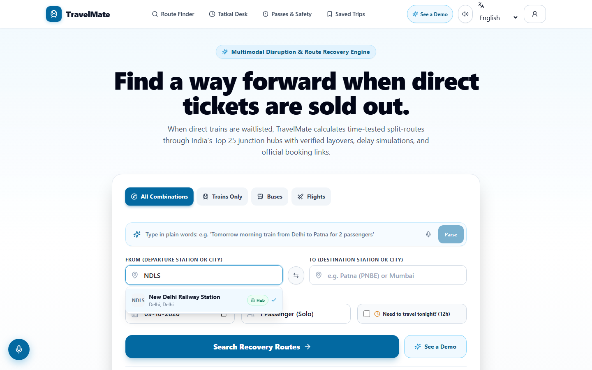
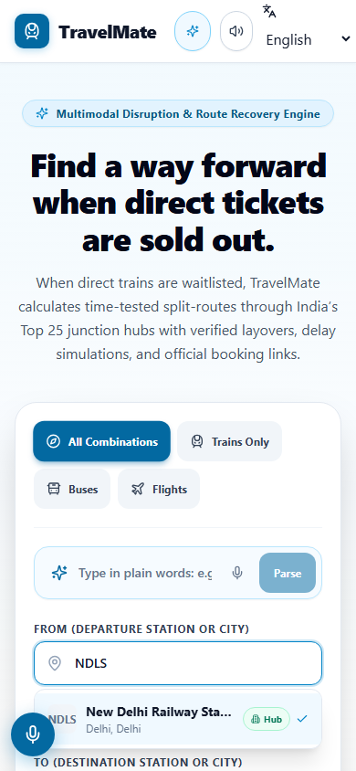
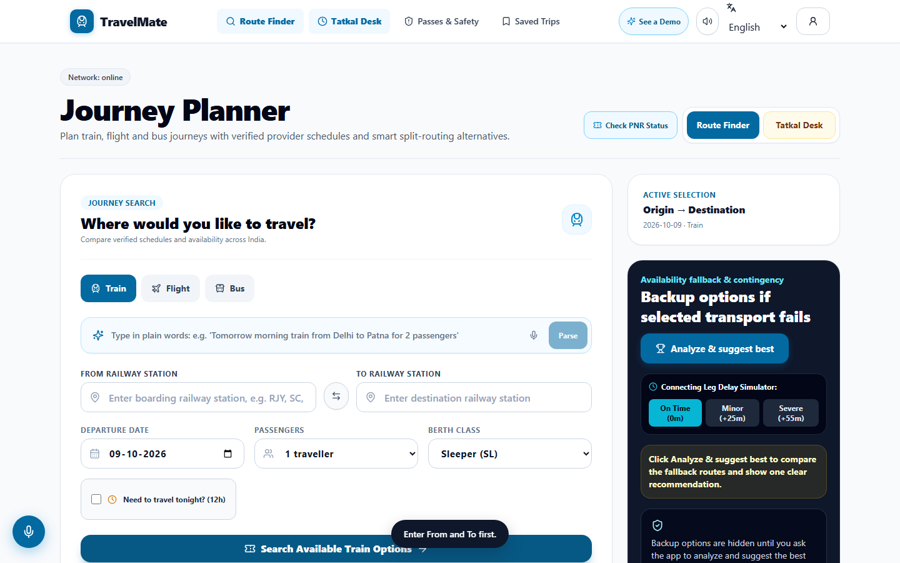
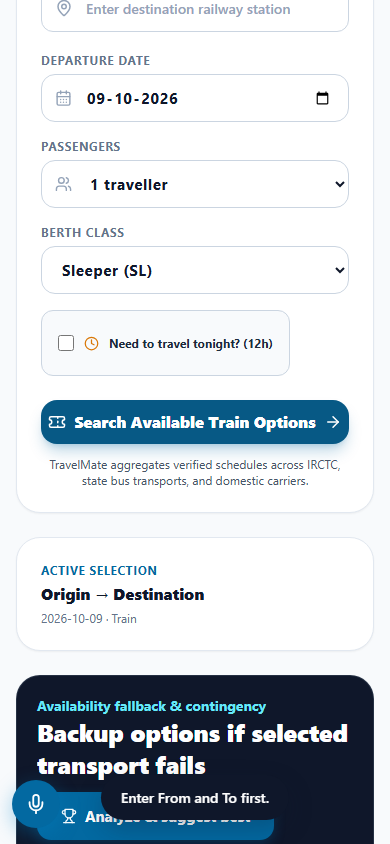
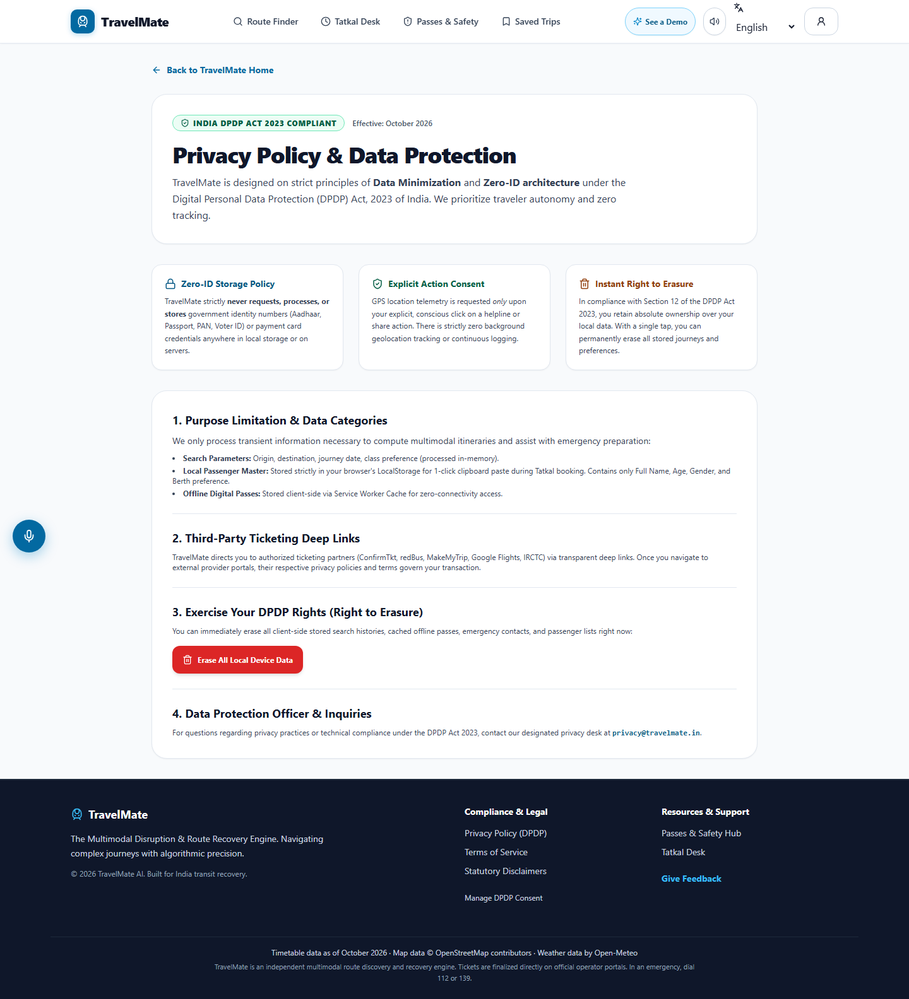
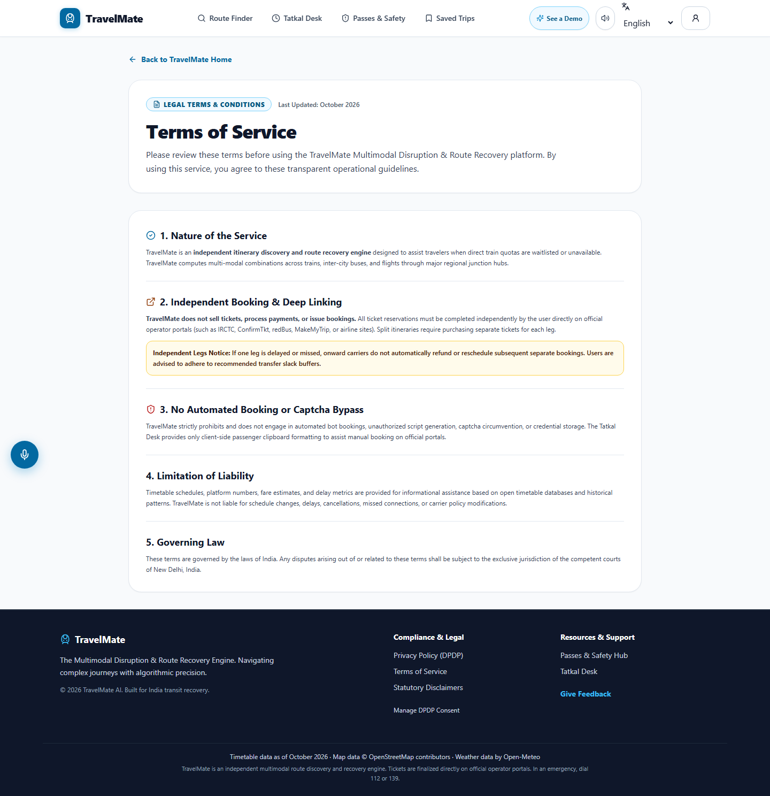
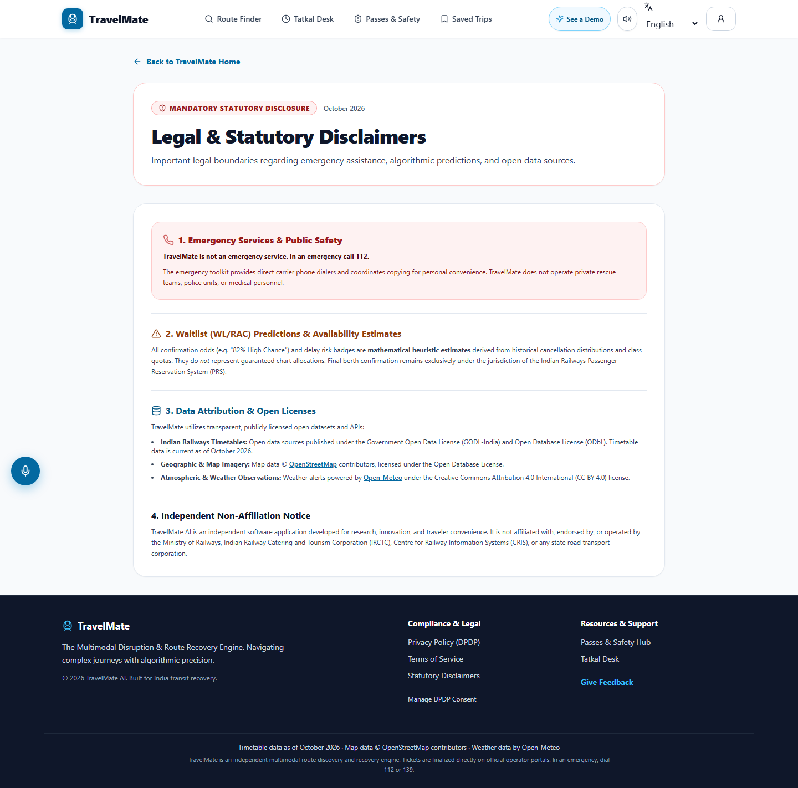
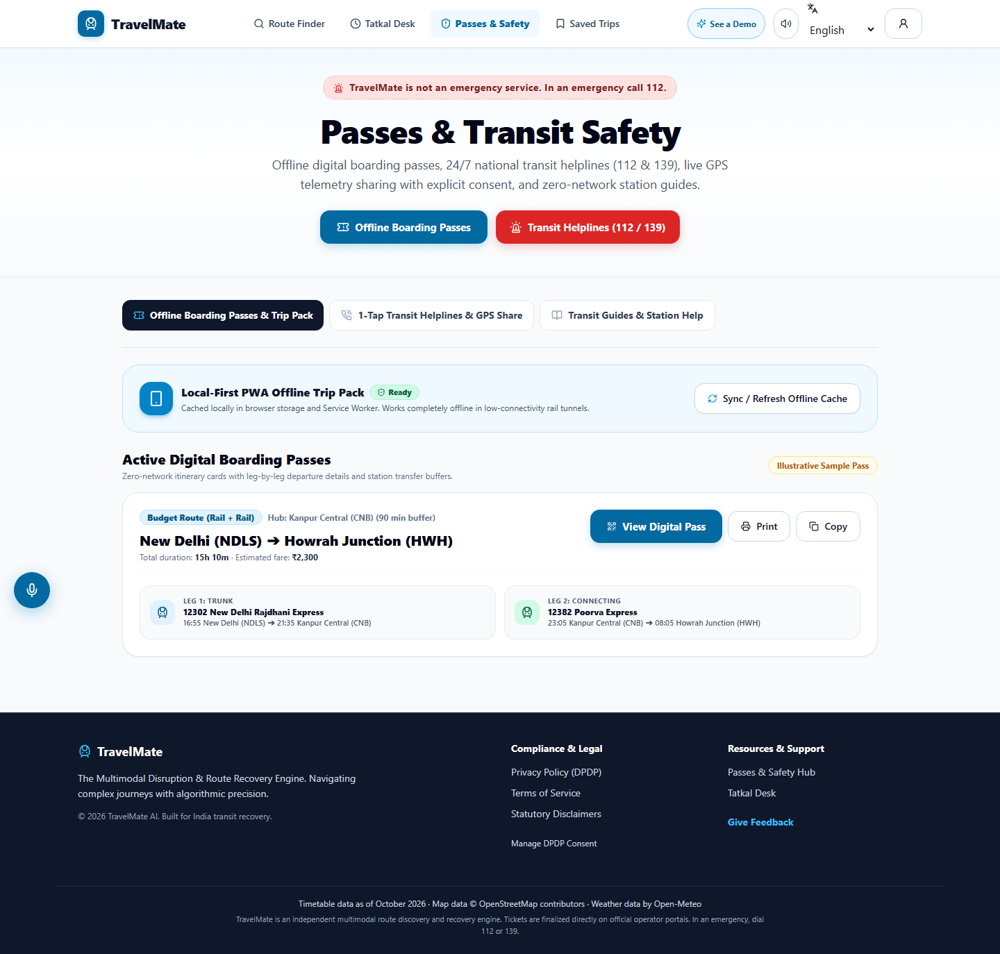

All Critical and High severity findings from Audit V2 are FIXED-VERIFIED with empirical proof, automated regression tests, and zero console/runtime regressions.
Fix: Removed cold-start auto-prompting of BlindVoiceGate and LocationPermissionGate. Fresh visitors see the Hero directly with 0 overlay modals.


Fix: Transformed LiveResultsPanel from a full-screen blocking modal into an inline section. Eliminated duplicate WaitlistBypassContrast rendering.


Fix: Resolved contrast failures in footer, suspense fallback, and legal pages. Axe-core reports 0 serious/critical violations across all 7 routes.




Fix: Added strict CSP and Strict-Transport-Security headers covering scripts, styles, OpenStreetMap tiles, and Open-Meteo weather API.
"headers": [
{
"key": "Strict-Transport-Security",
"value": "max-age=63072000; includeSubDomains; preload"
},
{
"key": "Content-Security-Policy",
"value": "default-src 'self'; script-src 'self' 'unsafe-inline'; style-src 'self' 'unsafe-inline'; img-src 'self' data: blob: https://*.tile.openstreetmap.org https://tile.openstreetmap.org; font-src 'self' data:; connect-src 'self' https://api.open-meteo.com; frame-ancestors 'none'; base-uri 'self'; form-action 'self';"
}
]